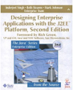

| I grew up in India but have been calling Silicon Valley home since 1997. I spent first 15 years of my career as an engineer at Google and Sun Microsystems on products and platforms related to Android, payments, J2EE and other server-side technologies, but then started the startup life since 2011. I was the Founder & CEO at Trymph Inc., a mobile multiplayer platform and gaming company. Trymph got acquired by a Series D company, Peel Technologies in 2014 where I spent six years as VP of Engineering. In 2020, I moved away from the consumer startup space to focus on AI and B2B SaaS and joined Motive Technologies as VP Engineering, AI, Driver Safety and Compliance Products. In 2023, I joined LVT Technologies to focus on Computer Vision and AI products. I have an M.S. in Management Science and Engineering from Stanford University, M.S. in Computer Science from Washington University in Saint Louis, and a B.Tech. in Computer Science and Engineering from Indian Institute of Technology, Delhi. |
Google Gson library: I co-created Gson library for use with-in Google for converting Java objects to JSON and vice-versa. We open-sourced this library and it currently is used extensively with-in and outside Google. On Android, it is used in roughly 41% of all apps and 51% of all installs likely translating to a footprint of 1B+ devices.
tcpmon tool: This is a tool that is used to monitor traffic on TCP connections. It has also been integrated in the NetBeans IDE.
Java2Objc tool: I created and open-sourced this tool that can be used to convert Java classes to their equivalent Objective C classes. It is useful to port an Android application to an iPhone application. This tool works on Java source files and attempts to create well-crafted Objective C code as if it was written by hand.
|
 |
Published by: Prentice Hall April 2002. ISBN: 0201787903 Authors: Inderjeet Singh, Beth Stearns, Mark Johnson, The Enterprise Team A Japanese edition is also available. From the Back Cover: As part of the highly regarded Java BluePrints program, Designing Enterprise Applications with the J2EE Platform, Second Edition, describes the key architectural and design issues in applications supported by the J2EE platform and offers practical guidelines for both architects and developers. It explores key J2EE platform features such as Java servlets, JavaServer Pages, and Enterprise JavaBeans component models, as well as the JDBC API, Java Message Service API, and J2EE Connector Architecture. It also discusses security, deployment, transaction management, internationalization, and other important issues for today's applications. |
I have also presented over 20 sessions at major industry conferences on topics such as software architectures, best practices, design patterns, library and component design for Java based Web applications and Web Services.
|
Stanford University M.S. in Management Science and Engineering Concentration in Organizations, Technology and Entrepreneurship |
|
Washington University in Saint Louis M.S. in Computer Science Certificate in Networking and Telecommunications |
|
Indian Institute of Technology, Delhi B.Tech. in Computer Science and Engineering |
Scalable Proxy Server with Plug-in Filters
Inventors: Vivek Nagar and Inderjeet Singh. US Patent 6604143. Issued Aug 2003.
Bounding Delays and Reducing Threading Overheads in Caching
Inventors: Inderjeet Singh. US Patent 6665704. Issued Dec 2003.
Method and system for providing framework for Java based AJAX web applications
Inventors: Gregory Murray, Sean Brydon and Inderjeet Singh. US Patent 7487201. Issued Feb 2009.
Web services message broker architecture
Inventors: Sean Brydon and Inderjeet Singh. US Patent 7702724. Issued Apr 2010.